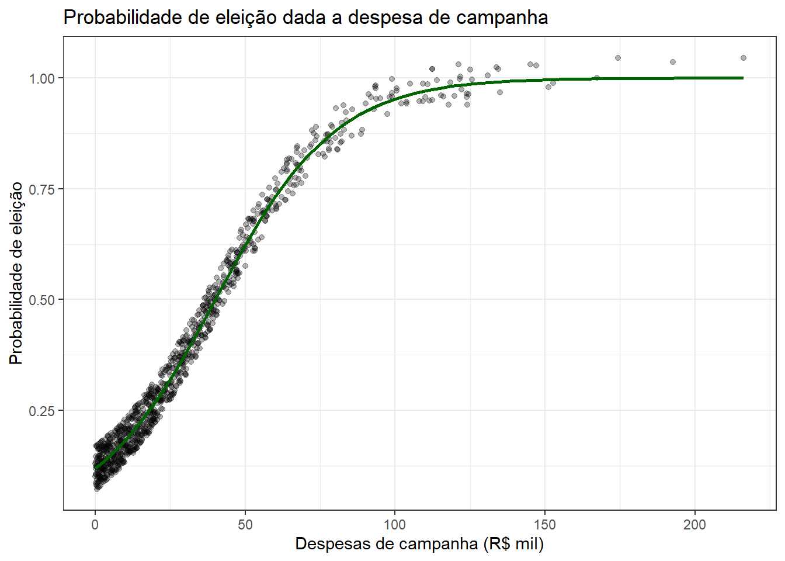

Todas as questões requerem explicações por escrito. Você deverá entregar via Classroom um arquivo em PDF, criado a partir deste documento, com as suas respostas. As respostas devem ser dissertativas e devem apresentar o código utilizado (quando solicitado)
9 Materiais de apoio
Esta lista de exercícios é baseada no conteúdo dos seguintes textos:
KELLSTEDT, P. M., & WHITTEN, G. D. The fundamentals of political science research. Cambridge University Press., 2018, Cap. 1, 2 & 3. (Aula 1)
KING, G.; KEOHANE, R.; VERBA, S. Designing social inquiry. Princeton University Press, 1994, Cap. 1. (Aula 2)
10 Bloco I – Definição do problema de pesquisa
10.1 1) Delimitação disciplinar
Dentro da sua disciplina, aponte uma área de pesquisa na qual você tem interesse, como Sociologia da Cultura, Estudos Legislativos, entre outras.
10.2 Resposta
Dinheiro na política e machine learning.
10.3 2) Problema de pesquisa
(Máx: 5 linhas). Defina um problema de pesquisa – pode estar relacionado a tese, dissertação ou outro projeto que você esteja desenvolvendo.
10.3.1 Instruções:
Mantenha-se dentro do sub-campo disciplinar definido. Lembre-se de que um problema empírico em Ciências Sociais geralmente relaciona dois fatores ou fenômenos de forma causal. Por exemplo, é possível relacionar o efeito da desigualdade de renda na participação política; ou o efeito da discriminação racial sobre o mercado de trabalho; ou o crescimento econômico sobre a democracia.
Formule seu problema de pesquisa na forma de uma pergunta. Exemplos: “Qual é o efeito da desigualdade de renda na participação política?”; “Por que populações menos escolarizadas têm menor acesso a benefícios sociais?”. É possível contextualizar o problema, indicando a relevância do tema e ou uma lacuna na literatura.
10.4 Resposta
No meu pré-projeto de dissertação, a pergunta que propus responder foi: “Qual é o efeito do dinheiro no sucesso eleitoral em eleições legislativas municipais no Brasil?”; ou, de maneira mais genérica “Por que alguns candidatos são eleitos em detrimento de outros?”. A relação entre dinheiro e eleições é amplamente explorada na literatura (Mancuso 2015), mas poucos trabalhos investiram em análises inferenciais ou preditivas sobre essa relação no nível municipal (Sampaio and Filho 2019).
10.5 3) Definição de conceitos
(Máx: 5 linhas). Com um problema definido, transforme agora os fatores ou fenômenos do seu interesse em conceitos, isto é, em termos teóricos mais precisos e que sejam passíveis de mensuração.
10.5.1 Instruções:
Por exemplo, “pobreza” é um conceito amplo que pode ser definido como “a carência de elementos essenciais para a sobrevivência ou o bem-estar humano”, o que é algo ligeiramente mais concreto e passível de mensuração. Definições de conceitos podem ser retiradas da literatura prévia, mas é importante que você os descreva de forma compreensível.
10.6 Resposta
Em certa medida, no caso particular deste problema de pesquisa, os conceitos e as variáveis operacionalizadas se confundem. “Sucesso eleitoral” pode representar, efetivamente, se o candidato conseguiu obter o determinado cargo legislativo em disputa1; “dinheiro” representa, do ponto de vista financeiro, quanto foi investido naquela disputa eleitoral pelo candidato.
10.7 4) Operacionalização de variáveis
(Máx: 5 linhas). Com seus conceitos definidos, nosso próximo passo é especificar como você os medirá. Essa etapa, chamada de operacionalização de variáveis, deve ser feita de forma a garantir que as medidas ou indicadores utilizados tenham aderência aos conceitos mobilizados, isto é, que realmente capturem aspectos do conceitos que você quer estudar. Este é o momento para pensar no recorte do objeto de forma a delimitar quais seriam as observações (i.e., quais seriam as linhas no seu banco de dados) e as unidades.
10.8 Resposta
A variável de sucesso eleitoral é operacionalizada a partir do resultado nas urnas – ou (1) uma variável contínua que guarda o número de votos de um candidato nas urnas, ou (2) uma variável binária que indica se o candidato foi eleito ou não2. Opto pela segunda abordagem. Além disso, “dinheiro” é operacionalizado através das despesas de campanha do candidato, disponibilizadas pelo TSE. Também seria razoável utilizar a receita, sob o risco de superestimar o efeito do dinheiro.
10.9 5) Variáveis
(Máx: 2 linhas). Indique qual das duas variáveis definidas anteriormente é a sua variável dependente, aquela que será explicada, e qual delas é a sua variável independente, a que supostamente explica a primeira.
10.10 Resposta
A despesa de campanha é a variável independente, e o sucesso eleitoral é a variável dependente.
11 Bloco II – Teoria e hipóteses
11.1 6) Teoria causal
(Máx: 7 linhas). Com o problema de pesquisa definido e variáveis operacionalizadas, elabore de forma concisa uma teoria que descreva como a sua variável independente causa a sua dependente.
11.1.1 Instruções:
Ao formular uma teoria, pense em responder à pergunta “por que Y ocorre?” usando X como parte da sua explicação. Por exemplo: o que estaria por detrás das menores taxas de comparecimento eleitoral dos menos escolarizados? Será que essas pessoas, por terem menos acesso a determinadas informações, teriam também menos interesse em política e, por consequência, menor disposição de ir votar? Outro exemplo: pessoas mais pobres comparecem menos às urnas por conta de maiores dificuldades de transporte (em geral, moram em lugares de mais difícil acesso e dispõem de menos recursos para se locomoverem até os locais de votação).
11.2 Resposta
As eleições brasileiras são caracterizadas por serem altamente competitivas em função, dentre outros aspectos, da alta oferta de candidatos. Portanto, altas despesas de campanha permitem que o candidato seja capaz de alcançar maior visibilidade e se diferenciar ao saturar o eleitor com diferentes estratégias de publicidade, financeiramente custosas, como material de campanha, presença online etc. Dito de outra maneira: ao conseguir reunir mais dinheiro para fazer campanha, o candidato tende a aumentar a viabilidade de sua candidatura na medida em que se torna capaz de alcançar o eleitor, ampliando a sua visibilidade e fortalecendo a estrutura da campanha.
11.3 7) Hipótese principal
(Máx: 3 linhas). Hipóteses especificam o sentido e forma de uma relação entre X e Y (positiva, negativa, nula, linear, quadrática, etc.). Por exemplo, “uma menor taxa de escolaridade diminui participação política”, “quanto maior a desigualdade fundiária, maior a taxa de migração de jovens do campo para a cidade”. Partindo dessa definição, a) formule uma hipótese principal para a sua teoria, b) e descreva como seria um gráfico de dispersão (scatterplot) que ilustrasse a relação entre X e Y de acordo com a sua hipótese.
11.4 Resposta
Quanto maior o gasto em campanha despendidos pelos candidatos, maior é a probabilidade de eleição do candidato.
Em uma relação não-linear, quanto mais “longe” no eixo \(X\) (isto é, quanto maior a despesa), mais “longe” no eixo \(Y\) (isto é, mais a probabilidade de eleição se aproxima de \(1\)).
library(tidyverse)set.seed(123)# candidatos simuladosn <-1000# simulacao das despesas de campanha (distribuicao exponencial com media 30 mil)# documentacao da funcao # https://www.rdocumentation.org/packages/stats/versions/3.6.2/topics/Exponentialdespesas <-rexp(n, rate =1/30)# efeito da despesaalpha <--2efeito_despesa <-0.05# calcula prob de eleicaoprob_eleito <-1/ (1+exp(-(alpha + efeito_despesa * despesas)))# dataframedados <-data.frame(despesas, prob_eleito)# plot da relacao logisticaggplot(dados, aes(x = despesas, y = prob_eleito)) +geom_jitter(height =0.05, alpha =0.3) +stat_smooth(method ="glm", method.args =list(family ="binomial"), se =FALSE, color ="darkgreen") +labs(title ="Probabilidade de eleição dada a despesa de campanha",x ="Despesas de campanha (R$ mil)",y ="Probabilidade de eleição" ) +theme_bw()

11.5 8) Implicações testáveis (mecanismo)
(Máx: 5 linhas). Se a sua teoria causal estiver certa, dela também devem decorrer outras implicações observáveis. Você conseguiria pensar em fenômenos empíricos secundários (associados ao principal, definido na pergunta de pesquisa) que decorreriam da sua explicação? Defina ao menos uma hipótese secundária testável que decorra da sua teoria causal.
11.5.1 Instruções:
Um exemplo: na teoria que relaciona menor escolaridade a menor participação política, é possível hipotetizar que pessoas menos escolarizadas devem acompanhar menos o noticiário político (este seria o mecanismo causal); nesse sentido, uma implicação empírica secundária consistente com a teoria é a de que pessoas menos escolarizadas devem consumir menos notícias políticas, o que poderia ser mensurado por meio de uma pesquisa de opinião perguntando sobre o consumo de notícias políticas (“Quantos dias na semana você costuma assistir ao noticiário na TV?”).
11.6 Resposta
Assumindo que a teoria causal esteja certa, poderíamos imaginar, por exemplo, que candidatos que gastam mais dinheiro também são mais conhecidos pelo eleitorado. Naturalmente, isso poderia ser testado empiricamente através de uma pesquisa de survey que estime a taxa de desconhecimento por parte dos eleitores a respeito dos candidatos na disputa, ou mesmo as intenções de voto.
12 Bloco III – Montando o desenho
12.1 9) Desenho de pesquisa
(Máx: 1 linha para cada item). Agora que você tem uma teoria, conceitos, variáveis definidas e hipóteses, preencha de forma sucinta os itens a seguir – eles te darão uma versão compacta e descritiva do seu desenho de pesquisa quantitativo em Ciências Sociais.
Pergunta de pesquisa:
Qual é o efeito do dinheiro no sucesso eleitoral em eleições legislativas municipais no Brasil?
Conceitos mobilizados:
Sucesso eleitoral e dinheiro.
Variável dependente:
Sucesso eleitoral (eleito ou não).
Variável independente:
Dinheiro (despesas de campanha).
Hipótese principal:
Quanto maior a despesa, maior a chance do candidato se eleger.
Hipótese secundária (mecanismo):
Candidatos que gastam mais também são mais conhecidos.
Implicações testáveis do mecanismo:
Em pesquisas de intenção de voto, candidatos que gastam mais possuem menores taxas de desconhecimento atreladas a eles.
Mancuso, Wagner Pralon. 2015. “Investimento Eleitoral no Brasil: Balanço da Literatura (2001-2012).”Revista de Sociologia e Política 23 (54): 155–83.
Sampaio, Daniel, and Dalson Britto Figueiredo Filho. 2019. “Como o dinheiro influencia as eleições municipais no Brasil: uma revisão sistemática.”Revista Brasileira de Informação Bibliográfica Em Ciências Sociais - BIB, no. 88: 1–25.
Speck, Bruno Wilhelm, and Wagner Pralon Mancuso. 2014. “A Study on the Impact of Campaign Finance, Political Capital and Gender on Electoral Performance.”Brazilian Political Science Review 8 (1): 34–57.
Há outras maneiras de operacionalizar essa variável, como sugerido na questão 4.↩︎
Ainda há pelo menos mais uma variação dessa abordagem, que modela o sucesso eleitoral como uma variável binária em função do número de votos, pensando nas limitações impostas por eleições proporcionais de lista aberta, em que o candidato mais votado não é necessariamente o eleito. Speck and Mancuso (2014), por exemplo, definem sucesso eleitoral como uma variável binária, em que os \(n\) candidatos mais votados assumem valor \(1\), enquanto os demais assumem o valor \(0\), sendo \(n\) o número de cadeiras em disputa no estado. É uma diferença sutil que, empiricamente, não difere tanto da modelagem padrão (vi no meu TCC!).↩︎